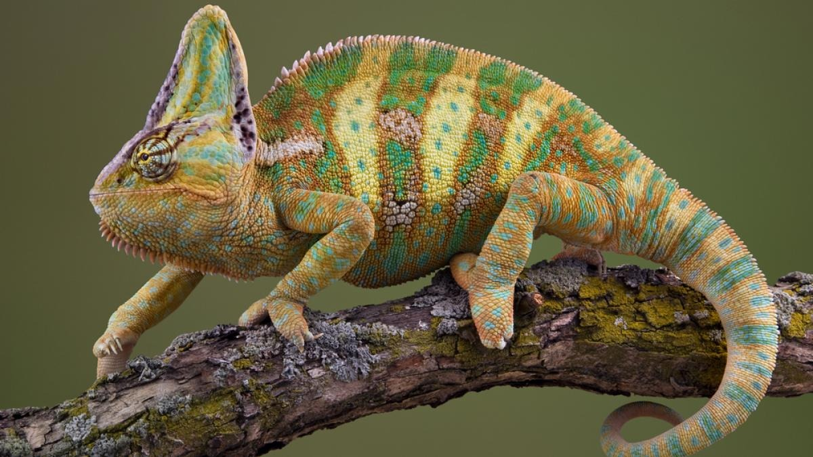

Episodio 01
El Camaleón del Barrio
Por qué el camaleón representa la capacidad de adaptarse sin perder la esencia. Testimonios de jóvenes de la comuna 4.
Cada colección tiene su historia. Escucha los testimonios reales de las comunas 4, 5, 6 y 8 que inspiran nuestras prendas.
En las esquinas de la comuna 8, los zapatos colgados en los cables cuentan historias que nadie quiere olvidar. Este episodio explora el símbolo más poderoso de nuestro barrio.
Historias reales que se vuelven diseño
Por qué el camaleón representa la capacidad de adaptarse sin perder la esencia. Testimonios de jóvenes de la comuna 4.
Las casas sin terminar son símbolos de resistencia. Conversamos con familias que construyen con sus manos.
Motos, dominó, música. Grabamos los sonidos que definen la vida cotidiana de nuestras calles.
Por qué la ropa oversize no es moda, es comodidad y seguridad. Hablamos con diseñadores locales.
Cómo transformamos prendas usadas en nuevas historias. El proceso detrás de nuestra sostenibilidad.
Los artistas detrás de los murales que inspiraron nuestra gráfica. Arte, resistencia y comunidad.
Voces del Barrio no es un podcast común. Es un archivo oral de memoria colectiva. Cada episodio se graba en las calles, con los vecinos, capturando los sonidos reales del barrio. Después, esas historias se convierten en diseños que llevas en tu ropa.
Hablamos con la gente del barrio, sin guiones ni filtros
Grabamos motos, dominó, música callejera
Escanea el QR de tu prenda y escucha su historia
Preservamos historias que merecen ser contadas